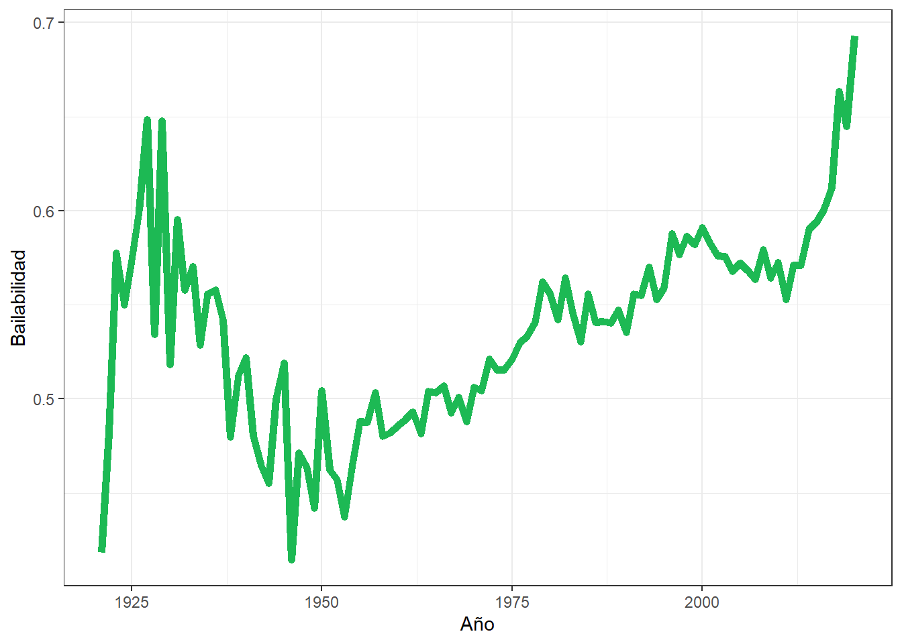
¿Qué hace exitosa a una canción?
Resumen
Los servicios de streaming de música ha hecho que sea más facil ver que tan popular una canción, y siempre se ha querido hacer una obra musical que sea exitosa y altamente rentable. Con el fin de saber que es lo que hace a una canción un exito analizamos las variables y tendencias que más incidencia tenian en la popularidad de una pieza musical, pare esto usamos una base de datos de “Spotify”, con más de 170000 canciones. Se llego a que las canciones con más energia, niveles de bailabilidad altos, y con estructuras musicales simples, y sobretodo, con interpretes populares seria muy exitosa. Por lo que se recomienda seguir los parametros antes mencionados, para maximizar las ganancias.
Introducción
Desde que la existe la industria musical se han tratado de crear canciones que generen gran impacto en la cultura, y con los servicios de streaming de música como “Spotify” y “Apple Music” podemos tener resultados más certeros de que tan popular se ha vuelto una canción, ademas las plataformas antes mencionadas suelen guardar sus canciones con ciertas caracteristicas y aspecto tecnicos calculables por medio de algoritmos.
Por lo tanto nos gustaria entender cuales de estos aspecto tecnicos son relevantes al momento de la creación de una canción para hacerla lo más popular posible, ya que la industria de la música es una de las más millonarias del mundo, y hacer una pieza musical con un alto nivel de popularidad puede llegar a ser muy rentable.
Para entender mejor como han sido las tendencias musicales de los últimos años haremos un análisis de una base de datos de “Spotify”, con el fin de ver cuales son las tendencias y los factores que hacen que una canción sea popular, o que al menos aumentan las posibilidades de que lo sea.
En este informe tendremos cuatro secciones. La primera parte será para explicar cómo están clasificados los datos, osea, alrededor de que fecha fueron recolectados, como se miden ciertas variable, que hace que una canción sea considerada o no dentro de una categoria u otra. Luego dejaremos claro cuáles serán los métodos que usaremos para hacer en análisis, es decir, que variables usaremos, como las seleccionaremos. En la tercera parte haremos el análisis y mostraremos los resultados, a través de tablas y gráficos, enfocándonos principalmente en las tendencias que siguen algunas variables y como se comportan algunas variables que podrian tener cierta incidencia en la popularidad de una pieza musical. Para finalizar, la cuarta parte será una conclusión, en la que clarificaremos cuales son las variables que más influyen en el posible éxito de una canción.
Contexto
La mayoria de las variables numéricas que miden aspectos tecnicos de una canción se obtuvieron por medio de algoritmos fueron hechos para medir este tipo de información.
Las canciones que entran en esta base de datos datan desde 1921 hasta 2020.
La variable explicit en “Spotify” se aplica a una canción que tiene:
Lenguaje fuerte
Imagenes(Portada) o referencias a violencia fisica o mental
Referencias o imagenes sexuales
Racismo, homofobia, misoginia o cualquier mensaje o comportamiento que se pueda considerar discriminatorio
Comportamiento peligroso o criminal que podria incluso ser “glamorizado” o incentivar la imitación de dichas conductas
Generalmente esta variable con fines de restricción parental.
La variable loudness, hace referencia a un resuldato del proceso de mezcla de una canción, ya que durante la producción de una pieza musical, las diferentes voces son grabadas con un volumen natural y luego se suele bajar la intensidad del sonido para destacar algunas cosas sobre otras, por eso este aspecto toma valores negativos.
Datos
Los datos corresponden a una base de datos de Spotify y fueron recogidos durante el mes de noviembre del año 2020. Las variables que se encuentran en esta base de datos se presentan en la siguiente tabla:
| Variable | Tipo | Descripción |
|---|---|---|
name |
caracter | Nombre de la canción |
id |
caracter | ID de la canción en Spotify |
artists |
caracter | Nombre del/los interpretes |
year |
numérica | Año de lanzamiento |
release_date |
caracter | Fecha de lanzamientos (Año-Mes-Día) |
valence |
numérica | Qué tipo de emociónes transmite la canción, más triste cerca de 0, más feliz cerca de 1 |
acousticness |
numérica | Qué tan acustico es el sonido de la canción (precencia de instrumentos no electricos ni digitales), mas acústico cerca de 1, menos acústico cerca de 0 |
danceability |
numérica | Que tan bailable es una canción, más bailable cerca de 1, menos bailable cerca de 0 |
duration_ms |
numérica | Duración en milisegundos |
energy |
numérica | Intencidad perceptual de la canción |
explicit |
numérica | La canción tiene contenido explicito (Si=1,No=0) |
instrumentalness |
numérica | Cantidad de voces en la canción, más cerca está de 1.0, más instrumental, tambien puede referenciar la complejidad de la obra |
key |
numérica | Tono de la canción |
liveness |
numérica | Probabilidad de que la canción haya sido grabada en vivo |
loudness |
numérica | Volumen de la canción |
mode |
numérica | Tonalidad mayor si es 1, tonalidad menor si es 0 |
popularity |
numérica | Qué tan popular es la canción |
speechiness |
numérica | Proporción de tiempo que ocupan palabras habladas o cantadas en la canción |
tempo |
numérica | Tempo de la canción (velocidad) |
Para trabajar usaremos aquellas variables que reflejen cierta tendencia, para hacer este análisis trabajaremos con la base de datos data, qué es la que contiene todos los datos, junto con la base data_by_year que contiene todas las variables numéricas pero se promedian por año, trabajaremos un poco con la variable explicit de la base de datos data, para contar cuantas canciones con contenido explicito hay cada año. Ademas se ajustara un modelo de regresión, para ver cuales aspectos inciden más en la popularidad de la canción, los cálculos necesarios para este llegar a este modelo se haran con una muestra que fue seleccionada bajo un criterio de popularidad, esta base de datos fue nombrada datos_a_estudiar1, luego hicimos una muestra aleatoria de la base da datos data llamada muestra_datos, de igual tamaño que datos_a_estudiar1, lo que motiva la creación de esta muestra es hacer una comparación entre el comportamiento de las canciones populares y el resto de canciones, pero la base de datos completa es muy grande y puede ser poco eficiente computacionalmente trabajar con tantos datos. A todo lo dicho se le debe suma que no se usara la variable year ni release_date como herramientas para medir la popularidad, pues podria resultar casi evidente que las canciones mas populares son más cercanas a la fecha de recolección de los datos.
Tambien se añadieron seis variables a las bases de datos a estudiar, que se presentan en la siguiente tabla:
| Variable | Tipo | Descripcion |
|---|---|---|
| Popularidad | caracter | La canción cumple con el requisito para considerarse popular |
| artist_list | lista | Lista de interpretes |
| numero_de_artistas | numérica | Número de interpretes |
| main_artist | caracter | Interprete principal de la canción |
| duration_s | numérica | Duración en segundos de la canción |
| feat | numérica | Si es una colaboración es 1, si no es 0 |
A pesar de que se crearon variables que podrian reemplazar como duration_ms y artist por duration_s y artist_list no se elimino ninguna variable original.
Ademas se calculo la correlación entre las variables de la base de datos original ( (cor1?) ) y una tabla que muestra solo la correlación entre popularity y las otras variables numéricas, en esta se incluyo el número de artistas ( (cor2?) ) .
Finalmente se incluyo una tabla que muestra la cancion más popular ( (can1?) )
Resultados
Vamos a ver como se han comportado un par de aspectos que podrian responder a factores culturales que son la bailabilidad y el tipo de contenido que tienen las canciones, refiendonos a si este es explicito o no.
Comenzamos por la bailabilidad que es algo que se podria asociar más a ciertos generos urbanos o a música latinoamerica, veamos el comportamiento de esta variable en la Figura 1:
Se ve que ha habido un incremento de la bailabilidad, mucho mayor que el de tiempos anteriores a partir del 2011, que coincide con la epoca en la que se comenzaron a misificar los servicios de streaming de musica como Spotify, que ayudaron a la diversificación de estilos musicales, y la posterior masificación de estilos más bailables, como los estilos urbanos y latinos.
En cuanto al tipo de contenido, explícito o no, podriamos pensar que cada vez las tematicas de las canciones tienden a ser más explicitas, miremos como ha ido evolucionando este fenomeno con el paso de los años con el paso del tiempo en la Figura 2:
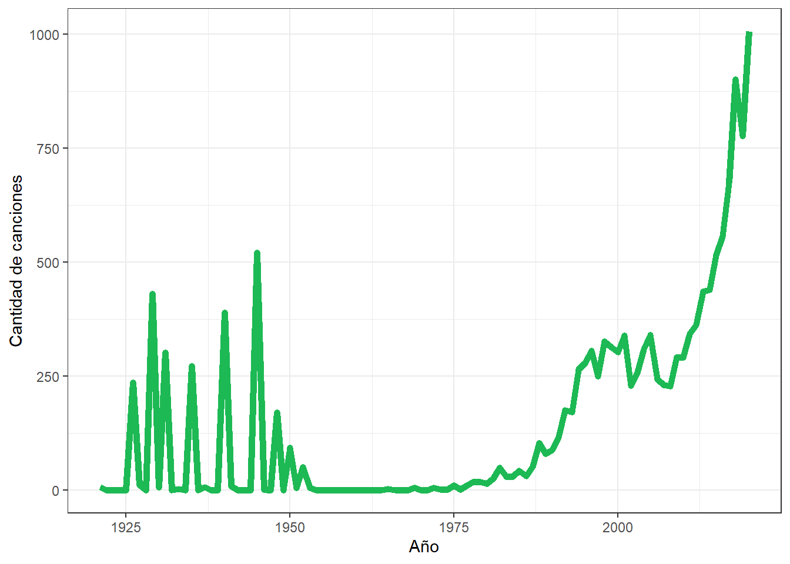
Es evidente que tiene un comportamiento extraño, a pesar de que en los últimos ha aumentado considerablemente, y es muy probable que los siga haciendo, entre los años 1925 y 1950 tiene un comportamiento erratico, y aunque en esos años hubo un auge de música negra, como el jazz y las tematicas politicas y sociales, que podrian asociarce a contenido explicito para Spotify, es curioso que luego de un corto vistaso a la base de datos, mucho del contenido explicito de aquellos años son canciones o poemas recitados de autores de la Unión Sovietica, y la aparentemente Spotify tambien considera ese tipo de temáticas como explicitas.
Ahora vamos a ver como se han comportado aquellos aspectos más técnicos a la hora de hacer una canción, solo veremos los cambios en el tiempo de las variables que presentan cambios evidentes, que son la acusticidad, la instrumentalidad, la energia y el volumen, las otras variables no presentan alguna tendencia clara.
Primero analicemos la acusticidad, es decir, que tan organico es el sonido de una pieza musical en la Figura 3:
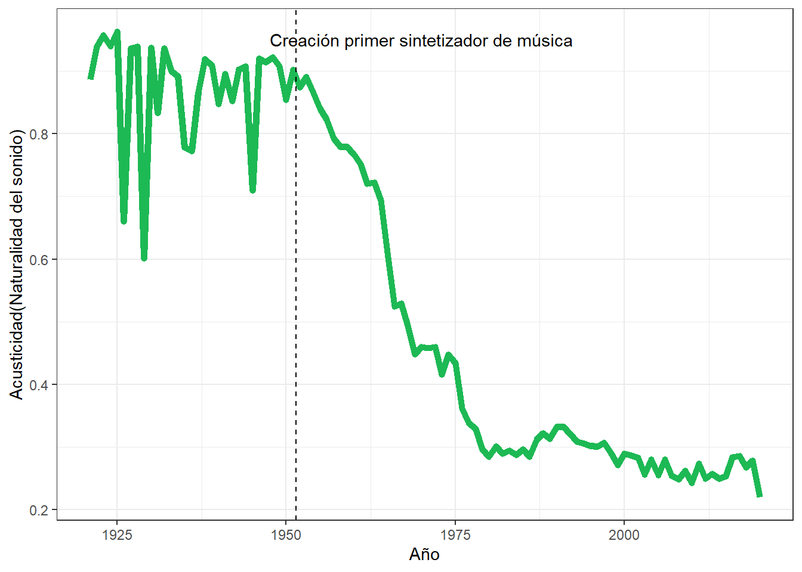
Es claro que hoy en dia los instrumentos “reales” cada vez se usan menos, principalmente por practicidad y presupuesto, pues los instrumentos reales son caros, y ocupan espacio, y obviamente hay que saber tocarlos, en cambio los instrumento digitales han ganado mucho terreno, practicamente desde su creación. Como vemos en el gráfico desde que se invento el primer sintetizador de música, la acusticidad de las canciones ha disminuidos considerablemente, y en los ultimos años se ve que va a seguir bajando.
De la mano con el fenomeno ocurrido con la acusticidad, esta lo que ocurre con la instrumentalidad y podemos ver que hay una clara relación entre estas dos, pues comienzan a bajar de forma ininterrumpida, es claro al ver la Figura 4:
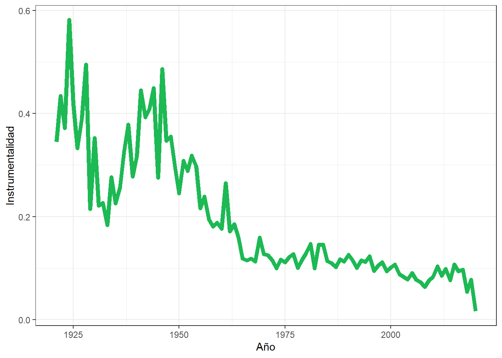
Lo que ocurre en este caso tiene que ver con la creación de instrumentos digitales, pues es más facil conseguir un sonido con un sintetizador, incluso hacer efectos de coro que disminuyen el uso de muchas voces o instrumentos reales.
De la misma forma que las dos variables analizadas anteriormente estaban relacionadad, las dos que analizaremos ahora tambien, estas son la energia y el volumen, como se hace evidente en la Figura 5 y la Figura 6:
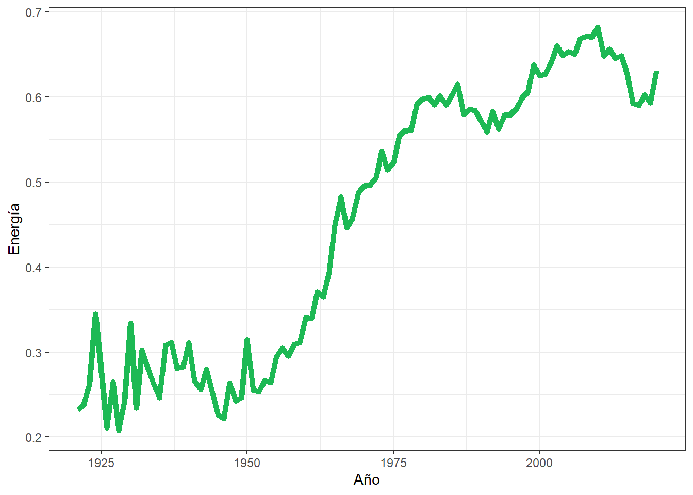
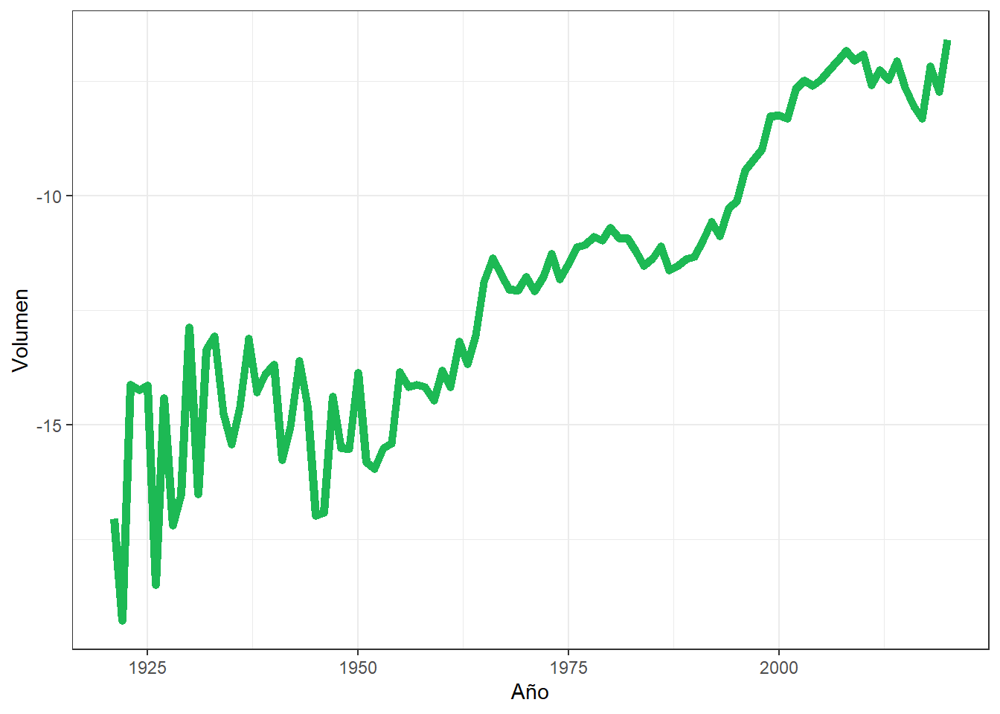
Este aumento en ambos aspectos se deben a que la mejor forma de hacer que una canción transmita mas energía es aumentando el volumen, esto es muy importante para nuestro análisis, ya que la música con mayor volumen llama más la atención que aquella con volumen más bajo.
Es evidente que hay canciones que no sirven, en primera instancia, para el estudio que queremos hacer, por lo tanto, si queremos maximizar las probabilidades de que el producto sea exitoso debemos ver cuales son los que han llegado al resultado que estamos buscando, para esto nos vamos a basar en un dato entregado por Alan B.Krueger, un economista e invetigador de la industria musical, que es el equivalente al 1% de los productos musicales son los que más exito tienen, en base a este dato, se decidio buscar en qué valor de la variable popularity estaba el percentil 99, se encontro que el 1% corresponde a un 76 en la variable antes mencionada., para ello veamos la Figura 7:
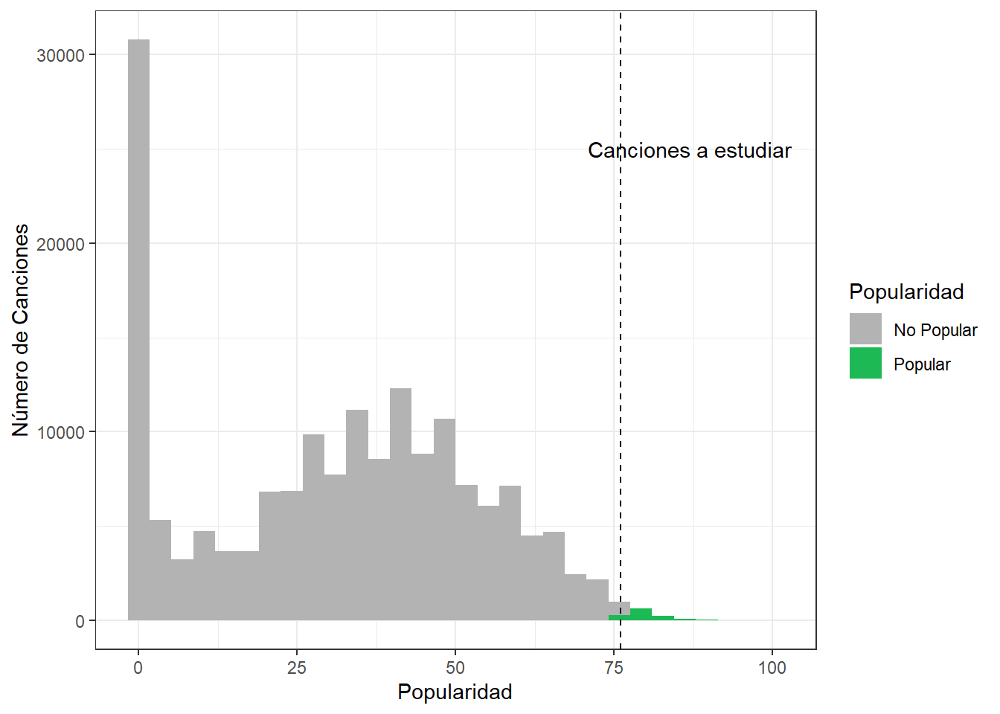
Vemos que si el requisito mínimo para considerar una canción exitosa, es que tenga un valor igual o superior a 76 en el indice de popularidad, es evidente la mayoria de las canciones tienen una popularidad moderada, y un gran grupo no tiene una popularidad igual a 0.
Con la idea de ver cuales son las variables qué más influyen en la popularidad de una canción se ajustó un modelo de regresión lineal (anexo), a partir del cual se llego a que los aspectos que más afectan a la popularidad de una canción son, en orden descendente, la duranción, la bailabilidad, la instrumentalidad, la energia, el volumen y el número de interpretes.
Por lo tanto, vamos a ver como se comportan las variables asociadas a los aspectos antes mencionados, en el 1% más popular y lo compararemos con una muestra aleatoria de igual tamaño de la base de datos completa, para ver cuales son las diferencias entre las canciones más populares y el resto de estas.
A partir de ahora todos los gráficos de color verde corresponden al aquellas canciones que tiene un 76 o más en el indice de popularidad, las grises son aquellas que pertenecen a la muestra de la base de datos completa.
Como se dijo, respecto al modelo de regresión, el aspecto más relevante es la duración de la canción, entonces, veamos como se concentran en la Figura 8:
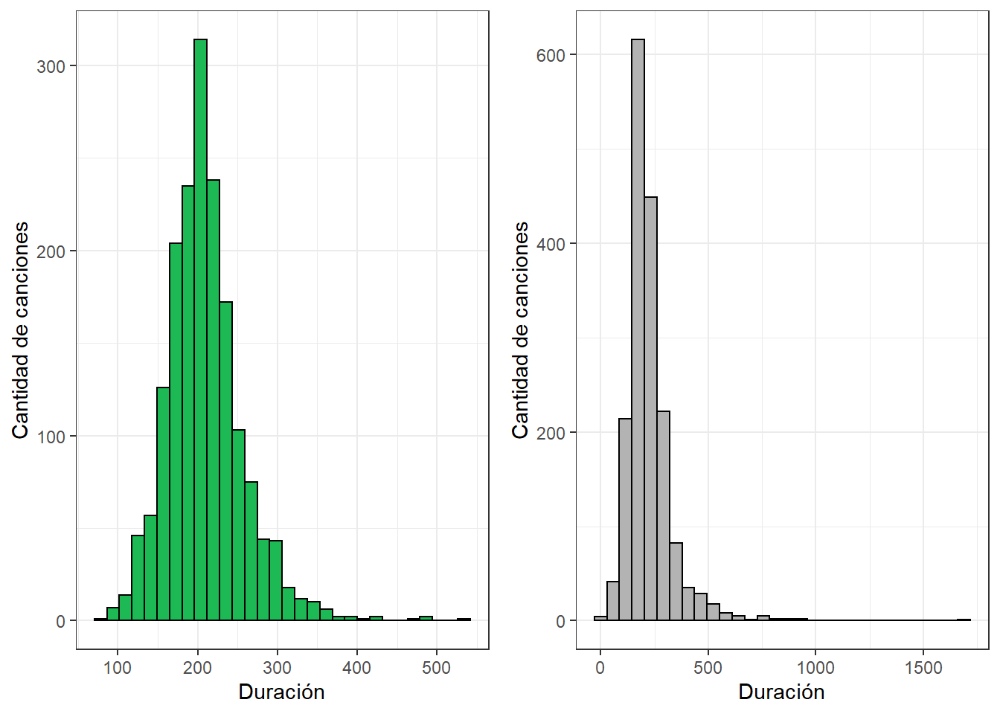
Vemos que las canciones mas populares concentran su duranción en torno a los 200 segundos, unos 3 minutos y medio, pero suelen alejarce de manera mas “controlada”, en cambio a nivel general, a pesar de la duración esta concentrada practicamente en el mismo rango de segundos, llegando incluso a que la proporción de canciones que duran casi lo mismo es más o menos el doble, la duración de las canciones se va de manera mas agresiva hacia los extremos, de hecho hay varias piezas que se acercan a la media hora de duración.
La siguiente variable es la bailabilidad, que como vimos antes en la Figura 1 ha ido en incrementando cada vez más con el paso del tiempo, ahora en la Figura 9 veamos como distribuye la bailabilidad:
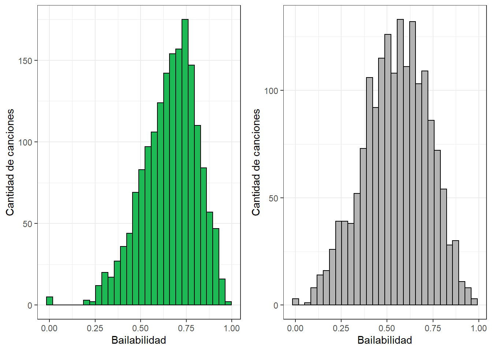
La distribución es casi la misma, tal vez hay una leve inclinación hacia el 1, maýor bailabilidad, en las canciones mas populares, junto con esto, tambien podemos ver que casi no hay canciones con menos de un 0.25, pero ademas de eso, las diferencias son practicamente inexistente.
Anteriormente en la Figura 4 vimos que la instrumentalidad ha disminuido considerablemente en con el paso del tiempo, veamos que pasa si comparamos esta variable en las canciones populares y en el resto de canciones en la Figura 10:
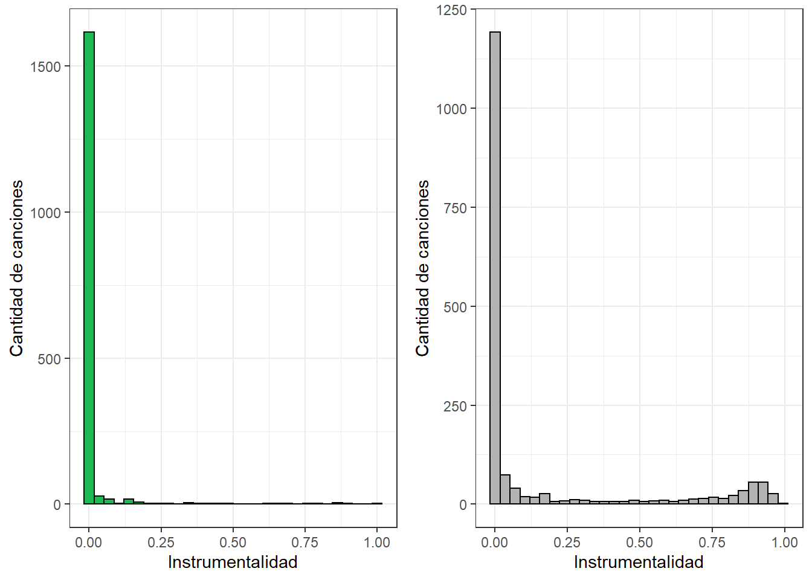
Nuevamente vemos una diferencia minima, y a pesar de que este valor ha disminuido con el paso de los años, no ha sido una caracteristica de la música ser muy instrumental, al menos en el periodo de tiempo que abarcan los datos.
La energía fue uno de los aspectos que más aporto información al momento de ser añadida al modelo de regresión, asi tambien fue una de las cosas que más han aumentado en la música, como se vio en la Figura 5, ahora veamos que tan diferente es la energía en las canciones segun su popularidad en la Figura 11:
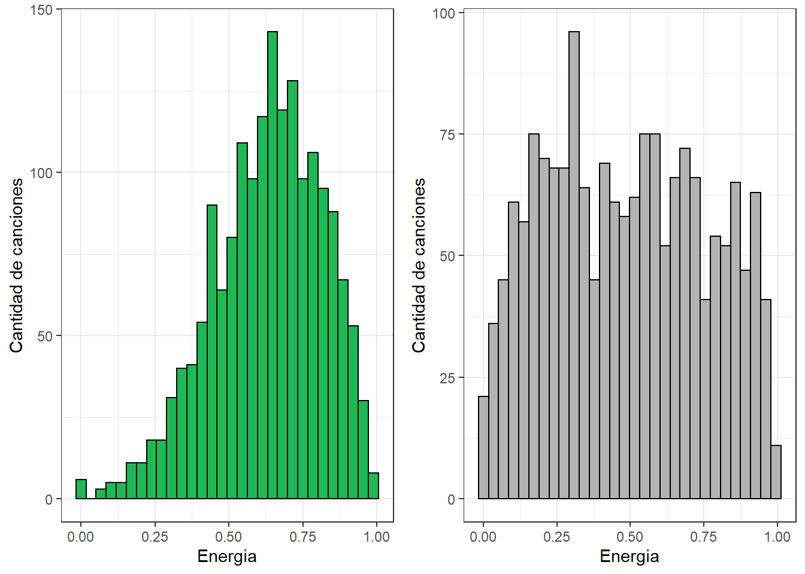
Tal como lo indicaba el modelo de regresión, si, la energía si es determinate cuando de popularidad se trata, la diferencia es clara, las canciones de la muestra aleatoria de la base de datos completa distribuye de manera más uniforme, incluso con valores más cercanos a una baja energia, en cambio las canciones populares claramente se inclinan hacia una energía, no extrema, pero si alta.
Con el volumen ocurrio casi lo mismo que con la energía, tanto en el modelo de regresión, y en su comportamiento en el tiempo (ver Figura 6 ), veamos la Figura 12:
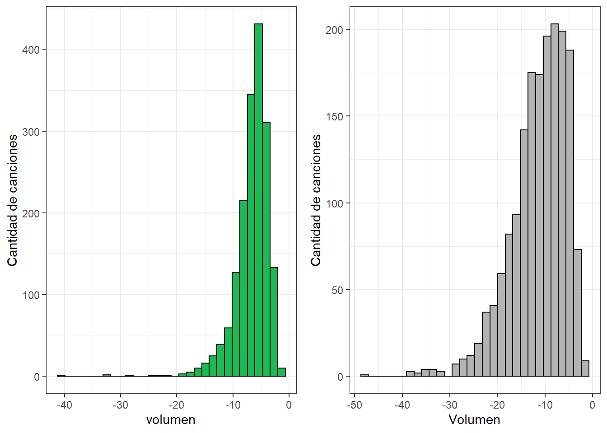
Si bien no hay tanta diferencia entre las muestras como en el caso de la energía, si hay diferencian claras, la más evidente es que el volumen, asi como la energía se concentra en valores más altos, y a pesar de que distribuyen de manera simila, se podria decir que la variabilidad en las canciones más populares es menor.
Los dos aspectos siguientes son el número de artistas y si son o no una colaboración, donde practicamente uno nace del otro, por no decir que son casi lo mismo, pero es el punto pues nos gustaria analizar estos aspecto en conjuntos, los podemos ver en la Figura 13 y la Figura 14:
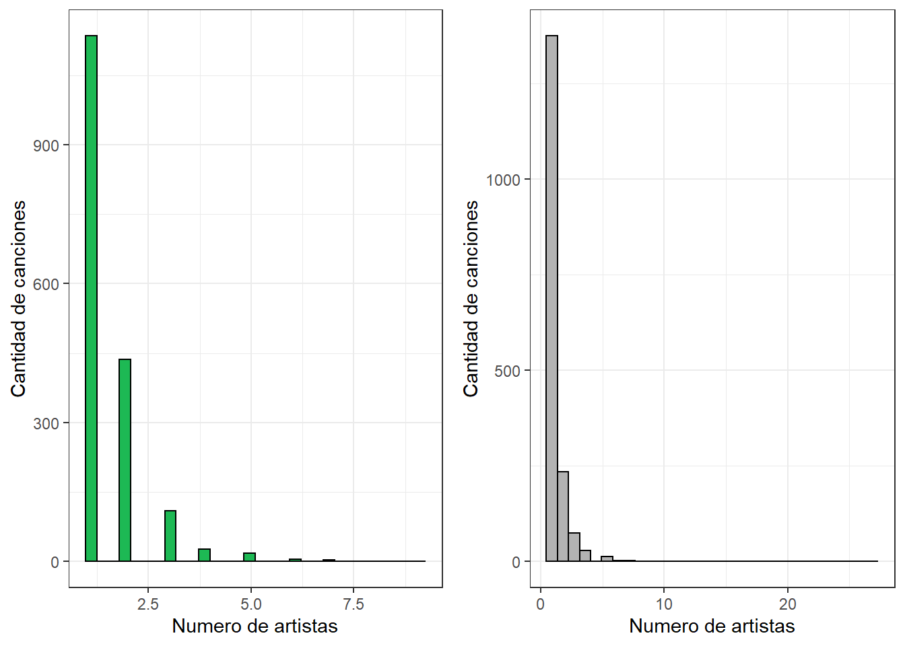
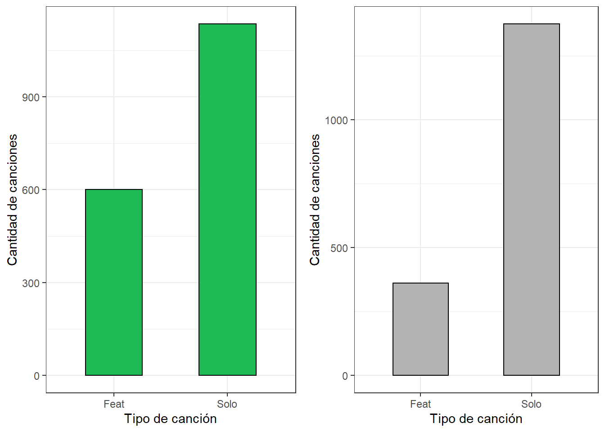
En la Figura 14 vemos que alrededor de un tercio de las canciones más populares corresponden a colaboraciones, mientras que en las canciones de nuestra muestra aleatoria más o menos un cuarto de las canciones son colaboraciones, lo que resulta llamativo es que al ver la Figura 13 las canciones de la muestra aleatoria son las que llegan a un número más elevado de interpretes, cuando las canciones populares raramente superan los dos interpretes.
El último aspecto a consderar estan los artistas/interpretes de las canciones, para eso vamos a ver quiénes son las diez personas con mas canciones entre las más populares, para esto veamos la Figura 15:
| Artista | Cantidad de canciones | |
|---|---|---|
| Bad Bunny | 23 | |
| 24kGoldn | 4 | |
| BTS | 22 | |
| Cardi B | 4 | |
| Ariana Grande | 26 | |
| Pop Smoke | 10 | |
| The Weeknd | 13 | |
| Justin Bieber | 11 | |
| Tate McRae | 4 | |
| Harry Styles | 18 | |
| total | — | 135.00 |
Diez artistas con mas canciones entre las más populares
Vemos que en total 135 canciones pertenecen a solo 10 artistas, esto representa un poco menos del 8% de las canciones, cuando en nuestra muestra de canciones populares hay 746 artistas, es decir, el 1.3% de los artistas con canciones mas escuchas tiene el 8% de canciones más populares. Por lo que el interprete podria ser fundamental para determinar la popularidad de una canción.
Conclusión
Durante el análisis vimos que existen ciertos aspectos culturales y sociales que cada vez tienen más importancia a la hora de componer una canción como su bailabilidad y que tan explicito es una canción vimos que ciertos avances tecnologicos han llevado a que cada vez el proceso de creación sea más practico y menos complejo, y tambien como cada vez se busca llamar más la atencion de las personas con música que suene cada vez más fuerte. Ademas vimos que a pesar de que un modelo nos arrojo algunas variables que sirven para ver que tan popular podria ser una cancion vimos que en realidad el resto de canciones no populares tenia un comportamiento similar, mientras que otras variables se comportaban de manera diferente según que tan popular podria resultar la canción. A todo lo demas se le suma que un aspecto muy relevante a la hora de ver la popularidad de una obra es quien la interpreta, pues unos poco artistas tienen un porcentaje considerable de canciones populares.
Despues de todo el trabajo realizado se puede concluir que no hay tantas diferencias entre una canción popular, pero habria que hacer énfasis en que deber tener un volumen y una energia relativamente alto, y tener un grado alto de bailabilidad, las tendencias indican que el contenido explicito podria ser un buen componente, y no se deberian hacer canciones demasiado complejas, por lo tanto una canción simple, bailable, y con un volumen moderadamente alto podria ser muy probablemente más popular que una canción compleja y de alta duración, otro factor a considerar y que podria ser el mas relevante son los interpretes de una canción, incluso hacer colaboriaciones incrementaria las probabilidades de exito, incluso la canción mas popular a analizar es una colaboración.
Muy probablemente en un futuro no muy lejano hacer canciones bailables con letra explicita sea la norma, donde la cantidad de voces disminuira a un punto en el que solo haya una voz cantando y un beat que se repite en toda la canción, ya no se ocuparan instrumento reales, o solo seran adornos, no habra espacio para complejizar demasiado la música, y el constante incremento del volumen traera consecuencias físicas a todos.
Anexo
| valence | year | acousticness | danceability | duration_ms | energy | explicit | instrumentalness | key | liveness | loudness | mode | popularity | speechiness | tempo |
|---|---|---|---|---|---|---|---|---|---|---|---|---|---|---|
| 1.000000000 | -0.028245108 | -0.18410103 | 0.558946477 | -0.191812922 | 0.35387598 | -0.018612579 | -0.19850097 | 0.0284729415 | 0.0038323579 | 0.313511618 | 0.015641155 | 0.014200433 | 0.04638098 | 0.171688598 |
| -0.028245108 | 1.000000000 | -0.61425007 | 0.188515473 | 0.079712699 | 0.53027176 | 0.220880522 | -0.27237097 | 0.0075397018 | -0.0573182019 | 0.487696883 | -0.032384856 | 0.862442011 | -0.16781586 | 0.141048057 |
| -0.184101031 | -0.614250065 | 1.00000000 | -0.266852104 | -0.076373233 | -0.74939299 | -0.246007469 | 0.32981933 | -0.0205497594 | -0.0244824813 | -0.561696384 | 0.047168265 | -0.573161775 | -0.04398032 | -0.207119692 |
| 0.558946477 | 0.188515473 | -0.26685210 | 1.000000000 | -0.139937253 | 0.22196694 | 0.241756967 | -0.27806350 | 0.0244385845 | -0.1001929907 | 0.285056662 | -0.045955924 | 0.199606165 | 0.23549141 | 0.001800602 |
| -0.191812922 | 0.079712699 | -0.07637323 | -0.139937253 | 1.000000000 | 0.04211868 | -0.048879810 | 0.08477042 | -0.0042664776 | 0.0471676119 | -0.003037038 | -0.046085027 | 0.059596667 | -0.08460391 | -0.025472314 |
| 0.353875979 | 0.530271762 | -0.74939299 | 0.221966939 | 0.042118684 | 1.00000000 | 0.132723406 | -0.28110144 | 0.0277049362 | 0.1261917677 | 0.782361957 | -0.039259889 | 0.485005040 | -0.07055488 | 0.250865274 |
| -0.018612579 | 0.220880522 | -0.24600747 | 0.241756967 | -0.048879810 | 0.13272341 | 1.000000000 | -0.14098661 | 0.0054319685 | 0.0396397870 | 0.140300022 | -0.078871628 | 0.191542773 | 0.41407048 | 0.011969450 |
| -0.198500967 | -0.272370970 | 0.32981933 | -0.278063496 | 0.084770418 | -0.28110144 | -0.140986614 | 1.00000000 | -0.0145908018 | -0.0471926468 | -0.408611265 | -0.036542926 | -0.296750254 | -0.12169984 | -0.105361388 |
| 0.028472941 | 0.007539702 | -0.02054976 | 0.024438585 | -0.004266478 | 0.02770494 | 0.005431968 | -0.01459080 | 1.0000000000 | 0.0002054394 | 0.017384982 | -0.116259608 | 0.007825643 | 0.02378404 | 0.002628997 |
| 0.003832358 | -0.057318202 | -0.02448248 | -0.100192991 | 0.047167612 | 0.12619177 | 0.039639787 | -0.04719265 | 0.0002054394 | 1.0000000000 | 0.056421736 | 0.002640718 | -0.076464075 | 0.13466743 | 0.007713504 |
| 0.313511618 | 0.487696883 | -0.56169638 | 0.285056662 | -0.003037038 | 0.78236196 | 0.140300022 | -0.40861126 | 0.0173849820 | 0.0564217365 | 1.000000000 | -0.010726940 | 0.457050616 | -0.13929570 | 0.209774456 |
| 0.015641155 | -0.032384856 | 0.04716826 | -0.045955924 | -0.046085027 | -0.03925989 | -0.078871628 | -0.03654293 | -0.1162596076 | 0.0026407179 | -0.010726940 | 1.000000000 | -0.028897057 | -0.05779607 | 0.011636583 |
| 0.014200433 | 0.862442011 | -0.57316177 | 0.199606165 | 0.059596667 | 0.48500504 | 0.191542773 | -0.29675025 | 0.0078256426 | -0.0764640749 | 0.457050616 | -0.028897057 | 1.000000000 | -0.17197872 | 0.133310155 |
| 0.046380979 | -0.167815864 | -0.04398032 | 0.235491412 | -0.084603906 | -0.07055488 | 0.414070481 | -0.12169984 | 0.0237840433 | 0.1346674299 | -0.139295703 | -0.057796072 | -0.171978718 | 1.00000000 | -0.011523180 |
| 0.171688598 | 0.141048057 | -0.20711969 | 0.001800602 | -0.025472314 | 0.25086527 | 0.011969450 | -0.10536139 | 0.0026289967 | 0.0077135043 | 0.209774456 | 0.011636583 | 0.133310155 | -0.01152318 | 1.000000000 |
Correlación entre todas las variables
| variable | Correlación |
|---|---|
| valence | 0.02658905 |
| year | 0.18034537 |
| acousticness | 0.01784169 |
| danceability | 0.10267409 |
| duration_ms | -0.10628878 |
| energy | -0.04059544 |
| explicit | 0.04315726 |
| instrumentalness | -0.06240134 |
| key | -0.00220176 |
| liveness | -0.02566122 |
| loudness | 0.04850468 |
| mode | -0.04113722 |
| popularity | 1.00000000 |
| speechiness | 0.05150200 |
| tempo | 0.01013346 |
| numero_de_artistas | 0.05064264 |
Correlación Popularidad
| valence | year | acousticness | artists | danceability | duration_ms | energy | explicit | id | instrumentalness | key | liveness | loudness | mode | name | popularity | release_date | speechiness | tempo |
|---|---|---|---|---|---|---|---|---|---|---|---|---|---|---|---|---|---|---|
| 0.145 | 2020 | 0.401 | ['Bad Bunny', 'Jhay Cortez'] | 0.731 | 205090 | 0.573 | 1 | 47EiUVwUp4C9fGccaPuUCS | 5.22e-05 | 4 | 0.113 | -10.059 | 0 | Dakiti | 100 | 2020-10-30 | 0.0544 | 109.928 |
Cancion más popular
Referencias
Referencias
Bello, Pablo, y David Garcia. 2021. «Cultural Divergence in Popular Music: The Increasing Diversity of Music Consumption on Spotify Across Countries». Humanities and Social Sciences Communications 8 (1). https://doi.org/10.1057/s41599-021-00855-1.
Carney, Courtney. s. f. «Jazz and the cultural transformation of America in the 1920s». Tesis doctoral. https://doi.org/10.31390/gradschool_dissertations.176.
Littlewood, Mark. 2019. «ROCKONOMICS: WHAT THE MUSIC INDUSTRY CAN TEACH US ABOUT ECONOMICS (AND OUR FUTURE). By Alan B.Krueger. John Murray (2019), 325 Pp. ISBN 9781473667884 (Hb, £20.00)». Economic Affairs 39 (3): 445-46. https://doi.org/10.1111/ecaf.12375.
Magnusson, Thor. 2021. «The Migration of Musical Instruments: On the Socio-Technological Conditions of Musical Evolution». Journal of New Music Research 50 (2): 175-83. https://doi.org/10.1080/09298215.2021.1907420.
Yang, Yukun. 2020. «“Musicalization of the Culture”: Is Music Becoming Louder, More Repetitive, Monotonous and Simpler?» Proceedings of the International AAAI Conference on Web and Social Media 14 (mayo): 750-61. https://doi.org/10.1609/icwsm.v14i1.7340.